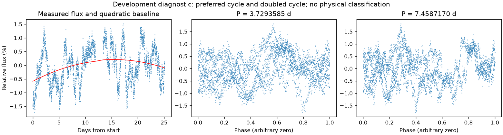
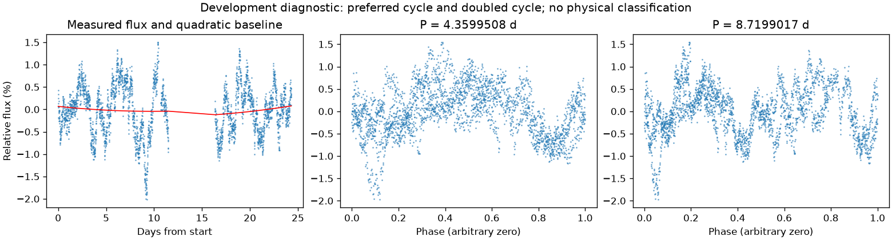

并非所有时段都支持重复变化
第三版周期：None 天；状态：not_established。

左图红线是缓慢基线；右面两图去除该基线。若未通过周期要求，两图只展示得分最高的竞争解释。
| 竞争周期（天） | 预测方法与改善 | 各组改善 | 通过初筛 |
|---|---|---|---|
| 3.7293585 | 交替循环：-1.0% | -11.8% / 16.5% | 否 |
| 2.1805558 | 交替循环：-18.4% | -7.1% / -34.5% | 否 |
| 0.9375479 | 交替循环：-27.1% | -27.9% / -26.2% | 否 |
| 1.5577707 | 交替循环：-27.6% | -27.4% / -27.8% | 否 |
| 1.8630841 | 交替循环：-30.4% | -39.5% / -21.9% | 否 |
| 1.8650182 | 交替循环：-30.7% | -39.5% / -22.3% | 否 |
| 3.1805213 | 交替循环：-31.3% | -30.2% / -32.5% | 否 |
| 1.9003516 | 交替循环：-31.6% | -34.1% / -29.0% | 否 |
“预测改善”衡量用一组周期的形状预测另一组，比只有缓慢基线好多少；负数表示更差。搜索和预测共用了资料，因此这不是可信概率，也不是独立验证。
第三版周期：None 天；状态：not_established。

左图红线是缓慢基线；右面两图去除该基线。若未通过周期要求，两图只展示得分最高的竞争解释。
| 竞争周期（天） | 预测方法与改善 | 各组改善 | 通过初筛 |
|---|---|---|---|
| 4.3599508 | 交替循环：9.9% | 14.3% / 2.8% | 否 |
| 1.4648111 | 交替循环：-15.0% | -5.5% / -28.4% | 否 |
| 1.6390006 | 交替循环：-29.4% | -40.1% / -20.2% | 否 |
| 3.2866690 | 交替循环：-38.7% | -58.2% / -18.0% | 否 |
| 2.9098207 | 交替循环：-40.8% | -70.2% / -16.1% | 否 |
| 5.8323756 | 交替循环：-49.5% | -93.5% / -33.3% | 否 |
| 5.8608025 | 交替循环：-57.8% | -102.7% / -41.0% | 否 |
| 6.0046314 | 交替循环：-91.2% | -149.9% / -68.9% | 否 |
“预测改善”衡量用一组周期的形状预测另一组，比只有缓慢基线好多少；负数表示更差。搜索和预测共用了资料，因此这不是可信概率，也不是独立验证。